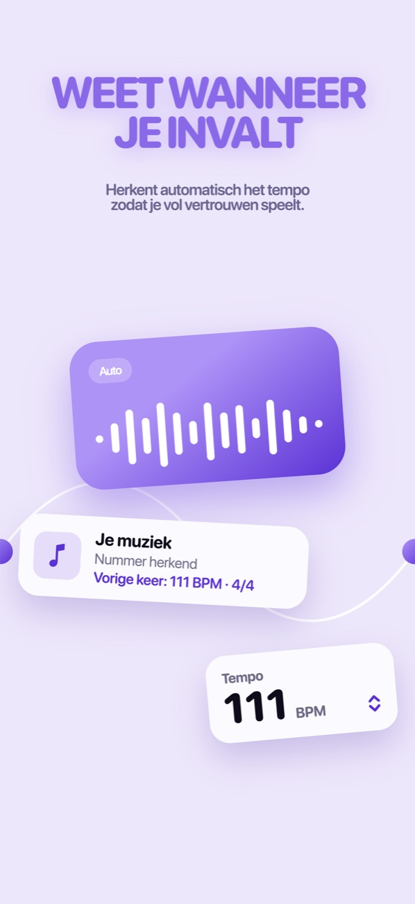
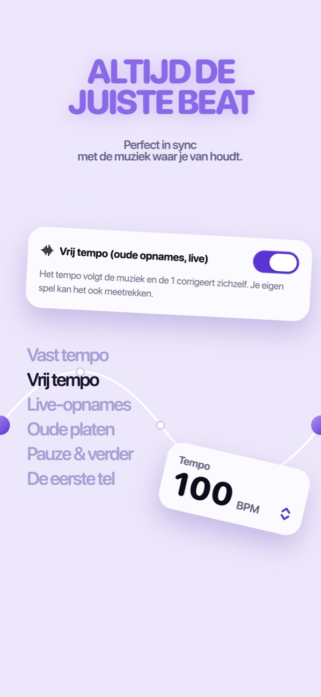
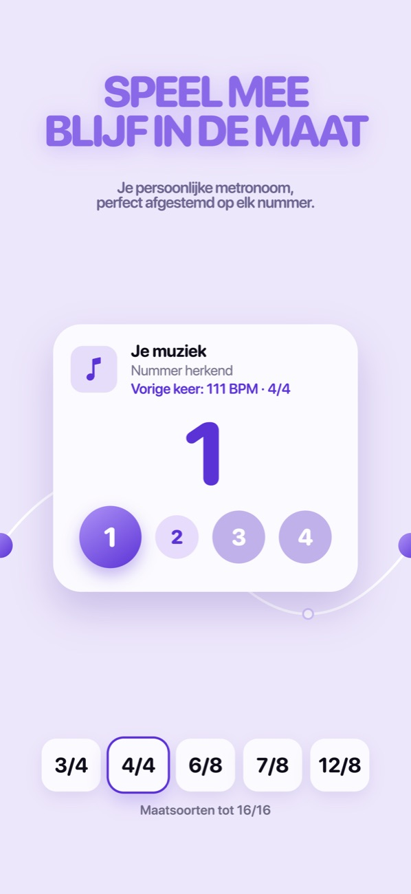
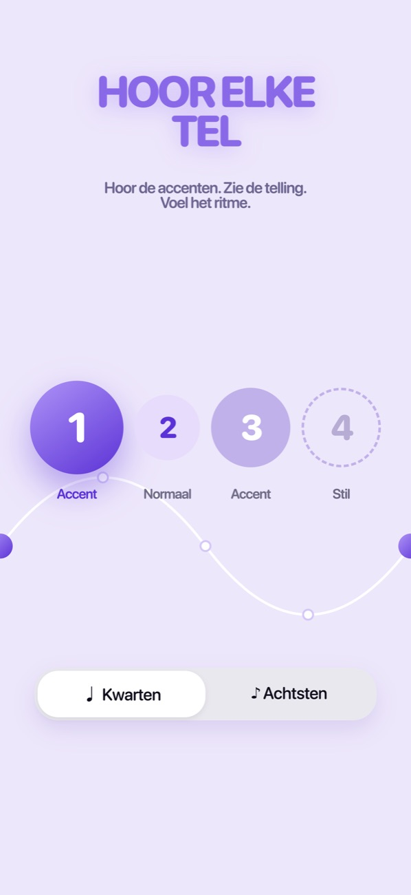

Zo werkt het
Speel muziek af
Uit een luidspreker, van een band of uit een andere app.
Laat hem luisteren
Na ongeveer 6–10 seconden zijn tempo, maat en de eerste tel herkend. Nummers die de app al eens heeft gehoord, herkent hij na ongeveer 5 seconden, ook zonder internet.
Speel mee
De metronoom tikt in de maat, met de eerste tel hoger en luider. Desgewenst ook in achtsten.
Blijft op de muziek zolang die speelt.
Vast tempo
Na het vastklikken blijven tempo en eerste tel staan. Meespelen, zingen of klappen brengt de metronoom niet van slag.
Vrij tempo
Voor oude of live-opnames waarvan het tempo schommelt. De metronoom beweegt met de muziek mee.
Offline herkenning
Gehoorde nummers starten de volgende keer meteen in de juiste maat, ook bij schommelend tempo.
Pauze en invallen
Met pauze zwijgt de metronoom, maar hij volgt de muziek stil verder. Invallen brengt hem precies in de maat terug.
Gemaakt voor koptelefoons
Klikvoorloop tegen Bluetooth-vertraging. De kliks kunnen ook via de iPhone-luidspreker klinken.
Handmatig
Een gewone metronoom met 30–300 BPM, maatsoorten tot 16/16 en tap-tempo. Werkt ook zonder microfoon.
Weet wanneer je invalt.
Geaccentueerde eerste tel, kwarten of achtsten. Elke tel kan een accent krijgen, normaal klinken of stil zijn.




Geen account. Geen reclame. Geen tracking.
Lees het privacybeleid- Microfoon
- Het geluid wordt op je apparaat geanalyseerd. Er worden geen opnames bewaard of verzonden.
- Nummerherkenning
- Een audiovingerafdruk (geen audio) gaat naar Shazam (Apple).
- Tempogegevens
- Voor een herkend nummer worden titel en artiest naar GetSongBPM gestuurd.
Support voor AutoMetronom
Beschrijf kort je vraag. We reageren zo snel mogelijk en gebruiken je gegevens alleen om je verzoek af te handelen.
Zodat we kunnen helpen: vermeld apparaat, iOS-versie, appversie, het afgespeelde nummer en een korte beschrijving. Een schermafbeelding helpt vaak.
Juridische teksten
Kies de regio waarin je AutoMetronom gebruikt.
- ZwitserlandPrivacybeleidGebruiksvoorwaardenCopyright
- Europese Unie en EERPrivacybeleidGebruiksvoorwaardenCopyright
- Verenigde StatenPrivacybeleidGebruiksvoorwaardenCopyright
- Chinese vastelandPrivacybeleidGebruiksvoorwaardenCopyright
- Andere regio’sPrivacybeleidGebruiksvoorwaardenCopyright